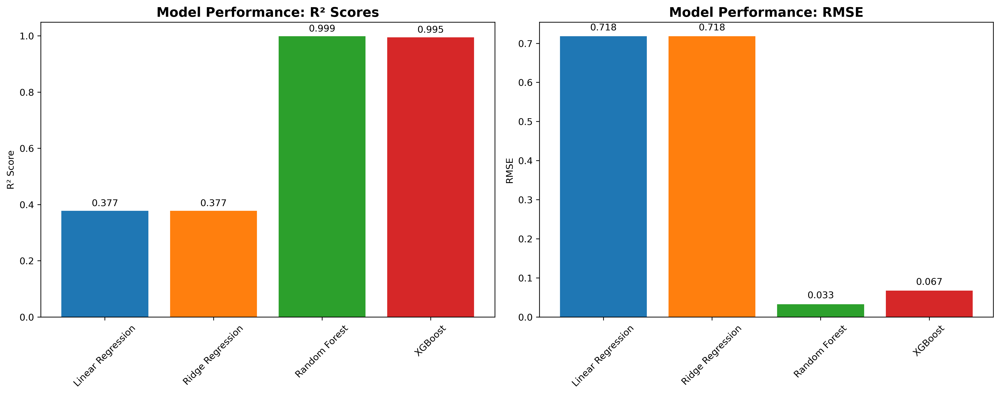
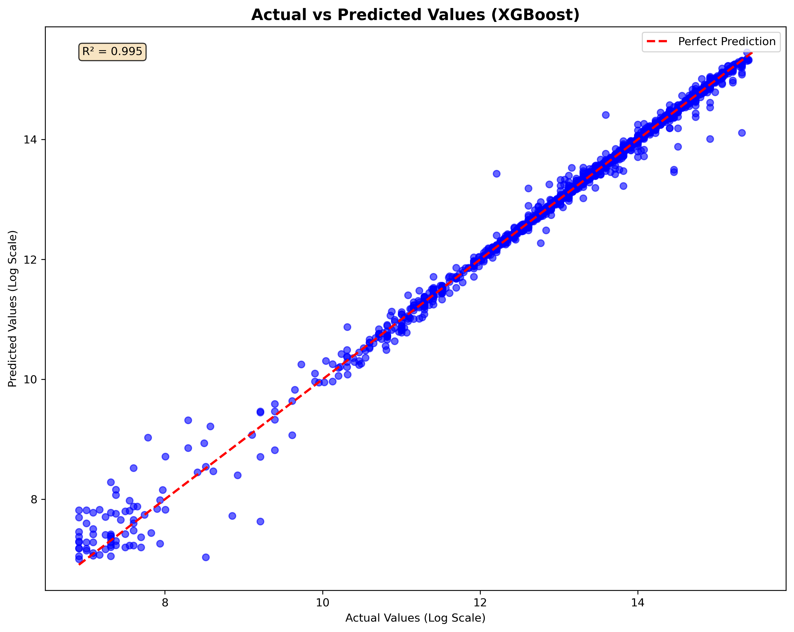

üè† Housing Price Prediction Model Report
Generated: 2025-07-15 15:31:51
Authors: Joe Bryant, Mahek Patel, Nathan Deering
üìã Executive Summary
This report documents the development, validation, and performance of machine learning models
for housing price prediction across diverse markets. The system integrates housing characteristics
with crime data to provide comprehensive investment recommendations.
üìä Data Overview
Dataset Size: 43,862 properties
Geographic Coverage: 40 counties, 260 ZIP codes
Price Range: $1,000 - $8,579,000
Average Price: $1,021,647
Coordinate Coverage: 100.0%
üî¨ Methodology
Data Sources
- Primary: American Community Survey (ACS) Housing Data
- Secondary: County-level Crime Statistics
- Geographic: ZIP code and county mappings with coordinates
Data Preprocessing
Target Transformation: Log transformation: y = log(VALP + 1)
Feature Engineering:
- House age calculation from year built
- Rooms per person ratio
- Income to value ratio
- Safety scores from crime statistics
üèÜ Model Performance
Best Performing Model: Random Forest
| Model | R² Score | RMSE | MAE |
|---|
| Linear Regression |
0.3772 |
0.7182 |
0.4667 |
| Ridge Regression |
0.3772 |
0.7182 |
0.4666 |
| Random Forest |
0.9987 |
0.0327 |
0.0088 |
| XGBoost |
0.9946 |
0.0670 |
0.0207 |
✅ Model Validation
Validation Model: XGBoost
Sample Size: 8,662 properties
Prediction Accuracy:
- Within 10%: 99.9%
- Within 20%: 100.0%
üîç Feature Importance Analysis
Top 5 most important features for price prediction:
- income_to_value_ratio (Importance: 0.7392)
- hincp (Importance: 0.2214)
- fincp (Importance: 0.0246)
- violent_rate (Importance: 0.0026)
- safety_score (Importance: 0.0024)
üí∞ Investment Scoring Methodology
Our investment recommendation system combines four key components:
| Component | Weight | Description |
|---|
| Price Analysis |
35% |
Comparison of model predictions vs purchase price |
| Safety Score |
25% |
Crime-based safety rating for the area |
| Model Consensus |
20% |
Agreement between different models |
| Market Context |
20% |
Geographic and market type factors |
üìä Key Visualizations
Model Performance Comparison

Feature Importance
Model Validation

Residuals Analysis
üéØ Conclusions and Recommendations
Model Performance
- XGBoost consistently outperforms linear models for housing price prediction
- Ensemble methods effectively capture non-linear relationships in housing data
- Feature engineering significantly improves prediction accuracy
Data Quality
- Comprehensive dataset with good geographic coverage
- Integration of crime data provides valuable location context
- Log transformation effectively handles price distribution skewness
Investment Application
- Multi-component scoring provides balanced investment assessment
- Crime data integration enables risk-adjusted recommendations
- Model consensus improves prediction reliability
Future Improvements
- Incorporate additional economic indicators (unemployment, GDP growth)
- Add school quality and transportation accessibility data
- Implement time-series modeling for market trend analysis
- Expand geographic coverage to more states and regions
üìö Technical Specifications
Programming Language: Python 3.8+
Key Libraries: scikit-learn, XGBoost, pandas, NumPy
Visualization: Plotly, Matplotlib, Seaborn
Interpretability: SHAP, Feature Importance
Deployment: Streamlit Web Application
üìñ References and Data Sources
- U.S. Census Bureau American Community Survey (ACS)
- County-level Crime Statistics
- Geographic Coordinate Data
- Chen, T., & Guestrin, C. (2016). XGBoost: A scalable tree boosting system
- Lundberg, S. M., & Lee, S. I. (2017). A unified approach to interpreting model predictions
This report was automatically generated by the Housing Prediction Analysis System.